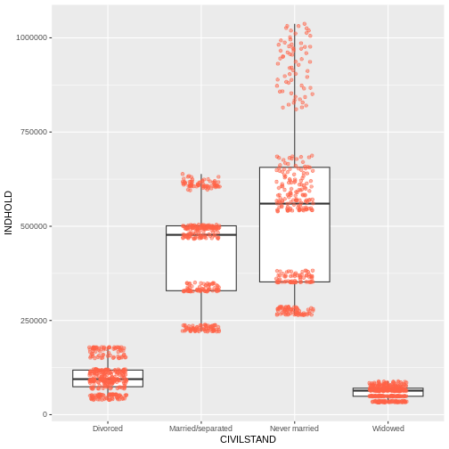

Content from What is an API?
Last updated on 2024-08-27 | Edit this page
Estimated time: 12 minutes
Overview
Questions
- What is an API?
- How do our computer interact with servers?
Objectives
- Understand what an API do
- Get to know the two main ways to get data from APIs
What is an API?
An API is an Application Programming Interface. It is a way of making applications, in our case an R-script, able to communicate with another application typically an online database.
What we want to be able to do, is to let our own application, our R-script, send a command to a remote application, an online database, in order to retrieve specific data.
And we want to read the answer we get in return.
This is equivalent to requesting a page from a webserver, something we have all done.
Webservers and browsers communicate using the HTTP protocol, and the mechanics of this communication can be visualized like this:

When we type in an URL in our browser, it translates that URL to a HTTP-request.
The browser sends that HTTP-request to a webserver. The request contains information about the page we need, but in the “header” of the request, there is a lot of other information. The version of browser we are using and cookies, to just mention two. The most important might be information about what type of response we would like.
The webserver interpret the request, and retrieves the data.
After that, the webserver sends both the status of the request (hopefully 200 - which is short for “everything is OK”), and the data.
The browser receives the data, and displays it as a webpage.
When we are working with APIs we cut out the user. We have a script that needs some data. We write code that defines, and then send a request til a server, specifying which data we need. The server extracts the needed data, and returns it to the script.
So - how do we do that?
Looking closer at the illustration above, we can see that we send a request to the server. That request contains several parts.
The request line. That contains the method we are using to communicate with the server, the adress and path of the server, and the information about the version of HTTP we are using to communicate with the server.
The header. Headers are meta information about our request. It contains information about who we are, the type of browser we are using and much more.
The body. This is really the message that we are sending to the server. Where the request line tells our computer where to we are sending our request, and the header provides information about the request, the body is the actual message we are sending to the server.
The trick is now to make the API understand what data we would like to get back from it.
Two types of requests
Two main types of requests are used when communicating with APIs, and they primarily concerns how we tell the API what data we would like.
In a GET request, we encode what we would like returned in the URL. You probably know that way already.
The URL “https://icanhazdadjoke.com/search?term=dog” is asking the server to search for the term “dog”. What we are searching for, is placed directly in the URL.
What we are sending to the server looks like this:
In a POST request, that information is stored in the body of the request.
That looks like this:
Note that the main difference between these two sets of headers, besides the difference in GET and POST, is that there is a body in the POST version. This is where the actual search is placed, rather than in the URL.
Almost all APIs support one or both of these methods.
The GET method is intuitively easy to understand, and it is relatively easy to edit the URL to search for something else. On the other hand there are limitations to what we can search for. Everything must be text, and there are limitations on the length of the search as well.
The POST method allow us to search for arbitrarily many parameters, and can handle many different data types - because we can put almost any kind of data into the body part of the request. The POST method is also more secure, because the body can be encrypted during transport from our computer to the server. This is also the method we need to use should the API require a login.
Key Points
- Getting data from an API is equivalent to requesting a webpage
- GET requests specify what data we want to retrieve in the URL
- POST requests specify what data we want to retrieve in the body of the request.
- Both requests have headers that we can manipulate to get what we want.
Content from GETting data
Last updated on 2024-08-27 | Edit this page
Estimated time: 12 minutes
Overview
Questions
- How do I get data from an API using the GET method?
- Is there a way to modify headers, to get a specific type of result?
Objectives
- Learn how to retrieve data using the GET method
- Learn how to adjust headers to get desired result
Please note: These pages are autogenerated. Some of the API-calls may fail during that process. We are figuring out what to do about it, but please excuse us for any red errors on the pages for the time being.
Using GET
The site icanhazdadjoke.com offers a wide selection of dad-jokes.
Dad jokes
a wholesome joke of the type said to be told by fathers with a punchline that is often an obvious or predictable pun or play on words and usually judged to be endearingly corny or unfunny https://www.merriam-webster.com/dictionary/dad%20joke
In addition to the website, an API is available that can be accessed using the GET method.
The GET method is a generic procedure, we need a function that actually handles the behind-the-scenes-stuff for us. The library httr have an implementation:
R
library(httr)
Taking a quick look at the documentation we first try GET directly:
R
GET("https://icanhazdadjoke.com/")
OUTPUT
Response [https://icanhazdadjoke.com/]
Date: 2024-08-27 01:48
Status: 200
Content-Type: text/html; charset=utf-8
Size: 9.79 kB
<!DOCTYPE html>
<html lang="en">
<head>
<meta charset="utf-8">
<meta http-equiv="X-UA-Compatible" content="IE=edge">
<meta name="viewport" content="width=device-width, initial-scale=1, minimum-s...
<meta name="description" content="The largest collection of dad jokes on the ...
<meta name="author" content="C653 Labs" />
<meta name="keywords" content="dad,joke,funny,slack,alexa" />
<meta property="og:site_name" content="icanhazdadjoke" />
...What is returned is the response from the server. That includes much more than what we are looking for. Notable is the “Status” part, which we are told is “200”, which is server-lingo for “everything is OK”.
And what do we get? We get a webpage. We can see that the content is DOCTYPE html. That was not really what we were looking for. HTML is not that easy to work with, and contains a lot of extranious information that we do not need.
Even if the GET method is relatively simple to work with, we need to add a bit more. Again taking a look at the documentation, it appears that we need to tell the API, that we would like a specific type of response, rather than the default html, more specifically “text/plain”.
httr has helper functions to assist us. The one we need here is accept() We now use that to tell the server, that we really want a response in just text:
R
result <- GET("https://icanhazdadjoke.com/", accept("text/plain"))
result
OUTPUT
Response [https://icanhazdadjoke.com/]
Date: 2024-08-27 01:48
Status: 200
Content-Type: text/plain
Size: 285 B
A panda walks into a bar and says to the bartender “I’ll have a Scotch and . ...
“Sure thing” the bartender replies and asks “but what’s with the big pause?”
We still get the response from the server, telling us that Status is 200, and everything is OK. But where is our dad-joke?
It is hidden in the content of the response. It is sent to us as binary code, so we are using the content() function, also from httr to extract it:
R
content(result)
OUTPUT
No encoding supplied: defaulting to UTF-8.OUTPUT
[1] "A panda walks into a bar and says to the bartender “I’ll have a Scotch and . . . . . . . . . . . . . . Coke thank you”. \r\n\r\n“Sure thing” the bartender replies and asks “but what’s with the big pause?” \r\n\r\nThe panda holds up his hands and says “I was born with them”"There is a little warning about the encoding of the string. But now we have a dad-joke!
What if we need to retrieve a specific joke? All the jokes has an ID, that we can use for that. If we want to find that, we need a bit more information about the joke. We can get that by specifying that we would like the result of our GET-request returned as JSON.
JSON
JSON (JavaScript Object Notation) is a format for structuring, in principle, any kind for text, structured in almost any way. It consists of pairs of strings, one denoting the name of the data we are looking at, and one containing the content of that data. Each set of data fields are encapsulated in curly braces, and a data field can have subfields, also encapsulated in curly braces. It can look like this:
{ “firstName”: “John”, “lastName”: “Smith”, “phoneNumbers”:{ “type”: “home”, “number”: “212 555-1234” }, { “type”: “office”, “number”: “646 555-4567” } }
JSON is readable for both humans and computers, but can be a bit tricky to convert to dataframes if there are a lot of nested fields.
Looking at the documentation, we see an example, which indicates that what we should tell the server that we accept, should be “application/json”. The httr library contains helper functions to assist us in manipulating the header. We use accept() that sets the accept part of the header:
R
result <- GET("https://icanhazdadjoke.com/", accept("application/json"))
result
OUTPUT
Response [https://icanhazdadjoke.com/]
Date: 2024-08-27 01:48
Status: 200
Content-Type: application/json
Size: 114 B
{"id":"JBIBImbMe","joke":"Did you hear the one about the giant pickle? He wa...Again - everything is nice and 200 = OK.
We also see a truncated version of the actual joke.
Let us use the content() function to extract the content:
R
content(result)
OUTPUT
$id
[1] "JBIBImbMe"
$joke
[1] "Did you hear the one about the giant pickle? He was kind of a big dill."
$status
[1] 200This data is returned as a list, which is the R-default way of handling any kind of data. Status is repeated, and now we have an id. We can use that to extract the same joke again.
NOTE: The joke returned is chosen at random. The id used here will probably be different from what we found above.
The way to retrieve a specific joke is to GET the URL:
GET https://icanhazdadjoke.com/j/<joke_id>
Where we replace the joke_id with the specific joke we want. Remember to specify the result that we want:
R
library(tidyverse)
GET("https://icanhazdadjoke.com/j/lGJmrrzAsc", accept("text/plain")) %>%
content()
OUTPUT
No encoding supplied: defaulting to UTF-8.OUTPUT
[1] "A termite walks into a bar and asks “Is the bar tender here?”"We can also search for words in jokes. The documentation tells us, that we should send our GET request to the URL
https://icanhazdadjoke.com/search
And in the examples we get the hint, that we should format the URL as:
https://icanhazdadjoke.com/search?term=
Dogs are always fun, let us search for dad jokes about dogs. Specify the type of result we want, pipe the response to the content() function and save it to result:
R
result <- GET("https://icanhazdadjoke.com/search?term=dog",
accept("application/json")) %>%
content()
result
OUTPUT
$current_page
[1] 1
$limit
[1] 20
$next_page
[1] 1
$previous_page
[1] 1
$results
$results[[1]]
$results[[1]]$id
[1] "82wHlbaapzd"
$results[[1]]$joke
[1] "Me: If humans lose the ability to hear high frequency volumes as they get older, can my 4 week old son hear a dog whistle?\r\n\r\nDoctor: No, humans can never hear that high of a frequency no matter what age they are.\r\n\r\nMe: Trick question... dogs can't whistle."
$results[[2]]
$results[[2]]$id
[1] "YvkV8xXnjyd"
$results[[2]]$joke
[1] "Why did the cowboy have a weiner dog? Somebody told him to get a long little doggy."
$results[[3]]
$results[[3]]$id
[1] "lyk3EIBQfxc"
$results[[3]]$joke
[1] "I went to the zoo the other day, there was only one dog in it. It was a shitzu."
$results[[4]]
$results[[4]]$id
[1] "DIeaUDlbUDd"
$results[[4]]$joke
[1] "“My Dog has no nose.” “How does he smell?” “Awful”"
$results[[5]]
$results[[5]]$id
[1] "EBQfiyXD5ob"
$results[[5]]$joke
[1] "what do you call a dog that can do magic tricks? a labracadabrador"
$results[[6]]
$results[[6]]$id
[1] "GtH6E6UD5Ed"
$results[[6]]$joke
[1] "What kind of dog lives in a particle accelerator? A Fermilabrador Retriever."
$results[[7]]
$results[[7]]$id
[1] "obhFBljb2g"
$results[[7]]$joke
[1] "I adopted my dog from a blacksmith. As soon as we got home he made a bolt for the door."
$results[[8]]
$results[[8]]$id
[1] "89MZLmWnWvc"
$results[[8]]$joke
[1] "I can't take my dog to the pond anymore because the ducks keep attacking him. That's what I get for buying a pure bread dog."
$results[[9]]
$results[[9]]$id
[1] "R7UfaahVfFd"
$results[[9]]$joke
[1] "My dog used to chase people on a bike a lot. It got so bad I had to take his bike away."
$results[[10]]
$results[[10]]$id
[1] "71wsPKeF6h"
$results[[10]]$joke
[1] "What did the dog say to the two trees? Bark bark."
$results[[11]]
$results[[11]]$id
[1] "sPRnOfiyAAd"
$results[[11]]$joke
[1] "At the boxing match, the dad got into the popcorn line and the line for hot dogs, but he wanted to stay out of the punchline."
$results[[12]]
$results[[12]]$id
[1] "AQn3wPKeqrc"
$results[[12]]$joke
[1] "It was raining cats and dogs the other day. I almost stepped in a poodle."
$results[[13]]
$results[[13]]$id
[1] "Lmjqzsr49pb"
$results[[13]]$joke
[1] "What did the Zen Buddist say to the hotdog vendor? Make me one with everything."
$search_term
[1] "dog"
$status
[1] 200
$total_jokes
[1] 13
$total_pages
[1] 1This is in JSON format. It is clear that the jokes are in the $results part of that datastructure. How can we get that to a data frame?
the content() function can treat the content of our response in different ways. If we treat it as text, the function fromJSON from the library jsonlite, can convert it to a data frame. We begin by loading the library:
R
library(jsonlite)
OUTPUT
Attaching package: 'jsonlite'OUTPUT
The following object is masked from 'package:purrr':
flattenR
GET("https://icanhazdadjoke.com/search?term=dog", accept("application/json")) %>%
content(as="text") %>%
fromJSON()
OUTPUT
No encoding supplied: defaulting to UTF-8.OUTPUT
$current_page
[1] 1
$limit
[1] 20
$next_page
[1] 1
$previous_page
[1] 1
$results
id
1 YvkV8xXnjyd
2 82wHlbaapzd
3 obhFBljb2g
4 89MZLmWnWvc
5 GtH6E6UD5Ed
6 R7UfaahVfFd
7 71wsPKeF6h
8 lyk3EIBQfxc
9 DIeaUDlbUDd
10 EBQfiyXD5ob
11 AQn3wPKeqrc
12 sPRnOfiyAAd
13 Lmjqzsr49pb
joke
1 Why did the cowboy have a weiner dog? Somebody told him to get a long little doggy.
2 Me: If humans lose the ability to hear high frequency volumes as they get older, can my 4 week old son hear a dog whistle?\r\n\r\nDoctor: No, humans can never hear that high of a frequency no matter what age they are.\r\n\r\nMe: Trick question... dogs can't whistle.
3 I adopted my dog from a blacksmith. As soon as we got home he made a bolt for the door.
4 I can't take my dog to the pond anymore because the ducks keep attacking him. That's what I get for buying a pure bread dog.
5 What kind of dog lives in a particle accelerator? A Fermilabrador Retriever.
6 My dog used to chase people on a bike a lot. It got so bad I had to take his bike away.
7 What did the dog say to the two trees? Bark bark.
8 I went to the zoo the other day, there was only one dog in it. It was a shitzu.
9 “My Dog has no nose.” “How does he smell?” “Awful”
10 what do you call a dog that can do magic tricks? a labracadabrador
11 It was raining cats and dogs the other day. I almost stepped in a poodle.
12 At the boxing match, the dad got into the popcorn line and the line for hot dogs, but he wanted to stay out of the punchline.
13 What did the Zen Buddist say to the hotdog vendor? Make me one with everything.
$search_term
[1] "dog"
$status
[1] 200
$total_jokes
[1] 13
$total_pages
[1] 1We have now seen how to send a request to an API, with search terms embedded in the URL.
We have seen how to add an argument to the GET function, that specifies the type of result we would like, effectively by adding something to the header of our request.
And we have seen how to extract the results, and get them into a dataframe.
Next, we are going to take a look on how we get results using the POST method, on an API that provides more factual and serious, but not so funny data.
Exercise
Request dad jokes about cats
R
GET("https://icanhazdadjoke.com/search?term=dog", accept("application/json")) %>%
content(as="text") %>%
fromJSON()
OUTPUT
No encoding supplied: defaulting to UTF-8.OUTPUT
$current_page
[1] 1
$limit
[1] 20
$next_page
[1] 1
$previous_page
[1] 1
$results
id
1 YvkV8xXnjyd
2 82wHlbaapzd
3 lyk3EIBQfxc
4 DIeaUDlbUDd
5 EBQfiyXD5ob
6 GtH6E6UD5Ed
7 obhFBljb2g
8 89MZLmWnWvc
9 71wsPKeF6h
10 R7UfaahVfFd
11 AQn3wPKeqrc
12 sPRnOfiyAAd
13 Lmjqzsr49pb
joke
1 Why did the cowboy have a weiner dog? Somebody told him to get a long little doggy.
2 Me: If humans lose the ability to hear high frequency volumes as they get older, can my 4 week old son hear a dog whistle?\r\n\r\nDoctor: No, humans can never hear that high of a frequency no matter what age they are.\r\n\r\nMe: Trick question... dogs can't whistle.
3 I went to the zoo the other day, there was only one dog in it. It was a shitzu.
4 “My Dog has no nose.” “How does he smell?” “Awful”
5 what do you call a dog that can do magic tricks? a labracadabrador
6 What kind of dog lives in a particle accelerator? A Fermilabrador Retriever.
7 I adopted my dog from a blacksmith. As soon as we got home he made a bolt for the door.
8 I can't take my dog to the pond anymore because the ducks keep attacking him. That's what I get for buying a pure bread dog.
9 What did the dog say to the two trees? Bark bark.
10 My dog used to chase people on a bike a lot. It got so bad I had to take his bike away.
11 It was raining cats and dogs the other day. I almost stepped in a poodle.
12 At the boxing match, the dad got into the popcorn line and the line for hot dogs, but he wanted to stay out of the punchline.
13 What did the Zen Buddist say to the hotdog vendor? Make me one with everything.
$search_term
[1] "dog"
$status
[1] 200
$total_jokes
[1] 13
$total_pages
[1] 1Key Points
- 200 is the internet code for everything is OK
- GET requests can be adjusted to specify desired result
- Dad jokes are not really that good.
Content from Using POST
Last updated on 2024-08-27 | Edit this page
Estimated time: 45 minutes
Overview
Questions
- “How do I get data from an API using the POST method?”
Objectives
- “Connect to Statistics Denmark, and extract data”
- “Create a list of lists to control the variables to be extracted”
Please note: These pages are autogenerated. Some of the API-calls may fail during that process. We are figuring out what to do about it, but please excuse us for any red errors on the pages for the time being.
Getting data from Statistics Denmark
The API from statistics Denmark can accept GET requests. But they recommend using POST instead. That allows us to do more advanced searches for data easier.
We are going to write a POST-request (with a little help from R), to retrieve data from Statistics Denmark.
But before we can do that, we need to know how the SD-API expects to receive data.
Hopefully we can get that by reading the [documentation, that can be found here.]https://www.dst.dk/en/Statistik/brug-statistikken/muligheder-i-statistikbanken/api
But that is rather confusing.
The main points:
First: Statistics Denmark provides four “functions”, or endpoints. This is equivalent to the URL we requested data from using the GET method.
{Screenshot of endpoints at Statistics Denmark API}
- The first is the “web”-site we have to send requests to if we want information on the subjects in Statistics Denmark.
- In the second we get information about which tables are available for a given subject.
- The third will provide metadata on a table.
- When we finally need the data, we will visit the last endpoint.
Secondly: We need to provide a body containing search parameters in a format like this:
R
{
"table": "folk1c"
}
Let us look at how to do this, by sending a request to
subjects.
The endpoint was
R
endpoint <- "http://api.statbank.dk/v1/subjects"
We will now need to construct a named list for the content of the body that we send along with our request.
This is a new datastructure that we have not encountered before.
Vectors are annoying because they can only contain one datatype. And dataframes must be rectangular.
A list allows us to store basically anything. The reason that we do not use them for everything is that they are a bit more difficult to work with.
R
our_body <- list(lang = "en", recursive = FALSE,
includeTables = FALSE, subjects = NULL)
This list contains four elements, with names. - The first,
lang, contains a character vector (length 1), containing
“en”, the language that we want Statistics Denmark to use when returning
data. - recursive and includeTables are
logical values, both false. - subjects is a special value,
NULL. This is not a missing value, there simply isn’t anything there.
But this nothing does have a name.
lists
Lists are subset in a special way. If we want the first element in
our_body, we can use the usual bracket notation:
R
our_body[1]
OUTPUT
$lang
[1] "en"If we want the actual value of element 1, we use a double bracket notation:
R
our_body[[1]]
OUTPUT
[1] "en"Now we have the two things we need, an endpoint to send a request, and a body containing what we want returned.
Let us try it:
R
result <- httr::POST(endpoint, body=our_body, encode = "json")
We ask to get the result in json, a speciel datastructure that is able to contain almost anything.
Let us look at the result:
R
result
OUTPUT
Response [https://api.statbank.dk/v1/subjects]
Date: 2024-08-27 01:48
Status: 200
Content-Type: text/json; charset=utf-8
Size: 884 BBoth informative. And utterly useless. The informative information is that our request succeeded (cave - it might not succeed on this webpage). We can see that in the status. 200 is an internet code for success.
Let us get the content of the result, which is what we actually want:
R
result %>%
content()
OUTPUT
[1] "[{\"id\":\"1\",\"description\":\"People\",\"active\":true,\"hasSubjects\":true,\"subjects\":[]},{\"id\":\"2\",\"description\":\"Labour and income\",\"active\":true,\"hasSubjects\":true,\"subjects\":[]},{\"id\":\"3\",\"description\":\"Economy\",\"active\":true,\"hasSubjects\":true,\"subjects\":[]},{\"id\":\"4\",\"description\":\"Social conditions\",\"active\":true,\"hasSubjects\":true,\"subjects\":[]},{\"id\":\"5\",\"description\":\"Education and research\",\"active\":true,\"hasSubjects\":true,\"subjects\":[]},{\"id\":\"6\",\"description\":\"Business\",\"active\":true,\"hasSubjects\":true,\"subjects\":[]},{\"id\":\"7\",\"description\":\"Transport\",\"active\":true,\"hasSubjects\":true,\"subjects\":[]},{\"id\":\"8\",\"description\":\"Culture and leisure\",\"active\":true,\"hasSubjects\":true,\"subjects\":[]},{\"id\":\"9\",\"description\":\"Environment and energy\",\"active\":true,\"hasSubjects\":true,\"subjects\":[]},{\"id\":\"19\",\"description\":\"Other\",\"active\":true,\"hasSubjects\":true,\"subjects\":[]}]"More informative, but not really easy to read.
The library jsonlite has a function that converts this
to something readable:
R
result %>%
content() %>%
fromJSON()
OUTPUT
id description active hasSubjects subjects
1 1 People TRUE TRUE NULL
2 2 Labour and income TRUE TRUE NULL
3 3 Economy TRUE TRUE NULL
4 4 Social conditions TRUE TRUE NULL
5 5 Education and research TRUE TRUE NULL
6 6 Business TRUE TRUE NULL
7 7 Transport TRUE TRUE NULL
8 8 Culture and leisure TRUE TRUE NULL
9 9 Environment and energy TRUE TRUE NULL
10 19 Other TRUE TRUE NULLA nice dataframe with the ten major subjects in the databases of Statistics Denmark.
Subject 1 contains information about populations and elections.
There are sub-subjects under that. We can see that in the column
hasSubjects
We now modify our body that we send with the request, to return information about the first subject.
We need to make sure that the number of the subject, 1
is intepreted as it is. This is a little bit of mysterious handwaving -
we simply put the 1 inside the function I() and stuff
works.
R
our_body <- list(lang = "en", recursive = F,
includeTables = F, subjects = I(1))
I()
I() isolates - or insulates - the contents of I() from the gaze of R’s parsing code. Basically it prevents R from doing stuff to the content that we dont want it to. In this specific case, the POST() function would convert the vector 1, with length 1, to a scalar, the more basic data type in R, that hold only one, single, atomic value at a time.
Note that it is important that we tell the POST function that the body is the body:
R
data <- POST(endpoint, body=our_body, encode = "json") %>%
content() %>%
fromJSON()
data
OUTPUT
id description active hasSubjects
1 1 People TRUE TRUE
subjects
1 3401, 3407, 3410, 3415, 3412, 3411, 3428, 3409, Population, Households, families and children, Migration, Housing, Health, Democracy, National church, Names, TRUE, TRUE, TRUE, TRUE, TRUE, TRUE, TRUE, TRUE, TRUE, TRUE, TRUE, TRUE, TRUE, TRUE, TRUE, TRUENot that easy to see in this format, but the data frame contains a
data frame. That is, in the column subjects the content is
a data frame.
We pick that out using the $-notation:
R
data$subjects
OUTPUT
[[1]]
id description active hasSubjects subjects
1 3401 Population TRUE TRUE NULL
2 3407 Households, families and children TRUE TRUE NULL
3 3410 Migration TRUE TRUE NULL
4 3415 Housing TRUE TRUE NULL
5 3412 Health TRUE TRUE NULL
6 3411 Democracy TRUE TRUE NULL
7 3428 National church TRUE TRUE NULL
8 3409 Names TRUE TRUE NULLThese are the sub-subjects of subject 1.
Let us look closer at 3401, Population.
Again, we modify the call we send to the endpoint:
R
our_body <- list(lang = "en", recursive = F,
includeTables = F, subjects = I(3401))
R
data <- POST(endpoint, body=our_body, encode = "json") %>%
content() %>%
fromJSON()
data
OUTPUT
id description active hasSubjects
1 3401 Population TRUE TRUE
subjects
1 20021, 20024, 20022, 20019, 20017, 20018, 20014, 20015, Population figures, Immigrants and their descendants, Population projections, Adoptions, Births, Fertility, Deaths, Life expectancy, TRUE, TRUE, TRUE, FALSE, TRUE, TRUE, TRUE, TRUE, FALSE, FALSE, FALSE, FALSE, FALSE, FALSE, FALSE, FALSEWe delve deeper into it:
R
data$subjects
OUTPUT
[[1]]
id description active hasSubjects subjects
1 20021 Population figures TRUE FALSE NULL
2 20024 Immigrants and their descendants TRUE FALSE NULL
3 20022 Population projections TRUE FALSE NULL
4 20019 Adoptions FALSE FALSE NULL
5 20017 Births TRUE FALSE NULL
6 20018 Fertility TRUE FALSE NULL
7 20014 Deaths TRUE FALSE NULL
8 20015 Life expectancy TRUE FALSE NULLAnd now we are at the bottom. 20021 Population figures does not have any sub-sub-subjects.
Next, let us take a look at the tables contained under subject 20021.
We need the next endpoint, which provides information about tables under a subject:
R
endpoint <- "http://api.statbank.dk/v1/tables"
R
our_body <- list(lang = "en", subjects = I(20021))
data <- POST(endpoint, body=our_body, encode = "json") %>%
content() %>%
fromJSON()
data %>% head()
OUTPUT
id text unit
1 FOLK1A Population at the first day of the quarter Number
2 FOLK1AM Population at the first day of the month Number
3 BEFOLK1 Population 1. January Number
4 BEFOLK2 Population 1. January Number
5 FOLK3 Population 1. January Number
6 FOLK3FOD Population 1. January Number
updated firstPeriod latestPeriod active
1 2024-08-12T08:00:00 2008Q1 2024Q3 TRUE
2 2024-08-12T08:00:00 2021M10 2024M07 TRUE
3 2024-02-12T08:00:00 1971 2024 TRUE
4 2024-02-12T08:00:00 1901 2024 TRUE
5 2024-02-12T08:00:00 2008 2024 TRUE
6 2024-02-12T08:00:00 2008 2024 TRUE
variables
1 region, sex, age, marital status, time
2 region, sex, age, time
3 sex, age, marital status, time
4 sex, age, time
5 day of birth, birth month, year of birth, time
6 day of birth, birth month, country of birth, timeThere are 21 tables under this subject. Let us see what information we can get about table “FOLK1A”:
We now need the third endpoint:
R
endpoint <- "http://api.statbank.dk/v1/tableinfo"
R
our_body <- list(lang = "en", table = "FOLK1A")
data <- POST(endpoint, body=our_body, encode = "json") %>%
content() %>%
fromJSON()
data
OUTPUT
$id
[1] "FOLK1A"
$text
[1] "Population at the first day of the quarter"
$description
[1] "Population at the first day of the quarter by region, sex, age, marital status and time"
$unit
[1] "Number"
$suppressedDataValue
[1] "0"
$updated
[1] "2024-08-12T08:00:00"
$active
[1] TRUE
$contacts
name phone mail
1 Dorthe Larsen 39173307 dla@dst.dk
$documentation
$documentation$id
[1] "4a12721d-a8b0-4bde-82d7-1d1c6f319de3"
$documentation$url
[1] "https://www.dst.dk/documentationofstatistics/4a12721d-a8b0-4bde-82d7-1d1c6f319de3"
$footnote
NULL
$variables
id text elimination time map
1 OMRÅDE region TRUE FALSE denmark_municipality_07
2 KØN sex TRUE FALSE <NA>
3 ALDER age TRUE FALSE <NA>
4 CIVILSTAND marital status TRUE FALSE <NA>
5 Tid time FALSE TRUE <NA>
values
1 000, 084, 101, 147, 155, 185, 165, 151, 153, 157, 159, 161, 163, 167, 169, 183, 173, 175, 187, 201, 240, 210, 250, 190, 270, 260, 217, 219, 223, 230, 400, 411, 085, 253, 259, 350, 265, 269, 320, 376, 316, 326, 360, 370, 306, 329, 330, 340, 336, 390, 083, 420, 430, 440, 482, 410, 480, 450, 461, 479, 492, 530, 561, 563, 607, 510, 621, 540, 550, 573, 575, 630, 580, 082, 710, 766, 615, 707, 727, 730, 741, 740, 746, 706, 751, 657, 661, 756, 665, 760, 779, 671, 791, 081, 810, 813, 860, 849, 825, 846, 773, 840, 787, 820, 851, All Denmark, Region Hovedstaden, Copenhagen, Frederiksberg, Dragør, Tårnby, Albertslund, Ballerup, Brøndby, Gentofte, Gladsaxe, Glostrup, Herlev, Hvidovre, Høje-Taastrup, Ishøj, Lyngby-Taarbæk, Rødovre, Vallensbæk, Allerød, Egedal, Fredensborg, Frederikssund, Furesø, Gribskov, Halsnæs, Helsingør, Hillerød, Hørsholm, Rudersdal, Bornholm, Christiansø, Region Sjælland, Greve, Køge, Lejre, Roskilde, Solrød, Faxe, Guldborgsund, Holbæk, Kalundborg, Lolland, Næstved, Odsherred, Ringsted, Slagelse, Sorø, Stevns, Vordingborg, Region Syddanmark, Assens, Faaborg-Midtfyn, Kerteminde, Langeland, Middelfart, Nordfyns, Nyborg, Odense, Svendborg, Ærø, Billund, Esbjerg, Fanø, Fredericia, Haderslev, Kolding, Sønderborg, Tønder, Varde, Vejen, Vejle, Aabenraa, Region Midtjylland, Favrskov, Hedensted, Horsens, Norddjurs, Odder, Randers, Samsø, Silkeborg, Skanderborg, Syddjurs, Aarhus, Herning, Holstebro, Ikast-Brande, Lemvig, Ringkøbing-Skjern, Skive, Struer, Viborg, Region Nordjylland, Brønderslev, Frederikshavn, Hjørring, Jammerbugt, Læsø, Mariagerfjord, Morsø, Rebild, Thisted, Vesthimmerlands, Aalborg
2 TOT, 1, 2, Total, Men, Women
3 IALT, 0, 1, 2, 3, 4, 5, 6, 7, 8, 9, 10, 11, 12, 13, 14, 15, 16, 17, 18, 19, 20, 21, 22, 23, 24, 25, 26, 27, 28, 29, 30, 31, 32, 33, 34, 35, 36, 37, 38, 39, 40, 41, 42, 43, 44, 45, 46, 47, 48, 49, 50, 51, 52, 53, 54, 55, 56, 57, 58, 59, 60, 61, 62, 63, 64, 65, 66, 67, 68, 69, 70, 71, 72, 73, 74, 75, 76, 77, 78, 79, 80, 81, 82, 83, 84, 85, 86, 87, 88, 89, 90, 91, 92, 93, 94, 95, 96, 97, 98, 99, 100, 101, 102, 103, 104, 105, 106, 107, 108, 109, 110, 111, 112, 113, 114, 115, 116, 117, 118, 119, 120, 121, 122, 123, 124, 125, Age, total, 0 years, 1 year, 2 years, 3 years, 4 years, 5 years, 6 years, 7 years, 8 years, 9 years, 10 years, 11 years, 12 years, 13 years, 14 years, 15 years, 16 years, 17 years, 18 years, 19 years, 20 years, 21 years, 22 years, 23 years, 24 years, 25 years, 26 years, 27 years, 28 years, 29 years, 30 years, 31 years, 32 years, 33 years, 34 years, 35 years, 36 years, 37 years, 38 years, 39 years, 40 years, 41 years, 42 years, 43 years, 44 years, 45 years, 46 years, 47 years, 48 years, 49 years, 50 years, 51 years, 52 years, 53 years, 54 years, 55 years, 56 years, 57 years, 58 years, 59 years, 60 years, 61 years, 62 years, 63 years, 64 years, 65 years, 66 years, 67 years, 68 years, 69 years, 70 years, 71 years, 72 years, 73 years, 74 years, 75 years, 76 years, 77 years, 78 years, 79 years, 80 years, 81 years, 82 years, 83 years, 84 years, 85 years, 86 years, 87 years, 88 years, 89 years, 90 years, 91 years, 92 years, 93 years, 94 years, 95 years, 96 years, 97 years, 98 years, 99 years, 100 years, 101 years, 102 years, 103 years, 104 years, 105 years, 106 years, 107 years, 108 years, 109 years, 110 years, 111 years, 112 years, 113 years, 114 years, 115 years, 116 years, 117 years, 118 years, 119 years, 120 years, 121 years, 122 years, 123 years, 124 years, 125 years
4 TOT, U, G, E, F, Total, Never married, Married/separated, Widowed, Divorced
5 2008K1, 2008K2, 2008K3, 2008K4, 2009K1, 2009K2, 2009K3, 2009K4, 2010K1, 2010K2, 2010K3, 2010K4, 2011K1, 2011K2, 2011K3, 2011K4, 2012K1, 2012K2, 2012K3, 2012K4, 2013K1, 2013K2, 2013K3, 2013K4, 2014K1, 2014K2, 2014K3, 2014K4, 2015K1, 2015K2, 2015K3, 2015K4, 2016K1, 2016K2, 2016K3, 2016K4, 2017K1, 2017K2, 2017K3, 2017K4, 2018K1, 2018K2, 2018K3, 2018K4, 2019K1, 2019K2, 2019K3, 2019K4, 2020K1, 2020K2, 2020K3, 2020K4, 2021K1, 2021K2, 2021K3, 2021K4, 2022K1, 2022K2, 2022K3, 2022K4, 2023K1, 2023K2, 2023K3, 2023K4, 2024K1, 2024K2, 2024K3, 2008Q1, 2008Q2, 2008Q3, 2008Q4, 2009Q1, 2009Q2, 2009Q3, 2009Q4, 2010Q1, 2010Q2, 2010Q3, 2010Q4, 2011Q1, 2011Q2, 2011Q3, 2011Q4, 2012Q1, 2012Q2, 2012Q3, 2012Q4, 2013Q1, 2013Q2, 2013Q3, 2013Q4, 2014Q1, 2014Q2, 2014Q3, 2014Q4, 2015Q1, 2015Q2, 2015Q3, 2015Q4, 2016Q1, 2016Q2, 2016Q3, 2016Q4, 2017Q1, 2017Q2, 2017Q3, 2017Q4, 2018Q1, 2018Q2, 2018Q3, 2018Q4, 2019Q1, 2019Q2, 2019Q3, 2019Q4, 2020Q1, 2020Q2, 2020Q3, 2020Q4, 2021Q1, 2021Q2, 2021Q3, 2021Q4, 2022Q1, 2022Q2, 2022Q3, 2022Q4, 2023Q1, 2023Q2, 2023Q3, 2023Q4, 2024Q1, 2024Q2, 2024Q3This is a bit more complicated. We are told that:
there are five columns in this table.
They each have an id
And a descriptive text
Elimination means that the API will attempt to eliminate the variables we have not chosen values for when data is returned. This makes sense when we get to point 7.
time - only one of the variables contain information about a point in time.
One of the variables can be mapped to - well a map
The final column provides information about which values are stored in the variable. There are 105 different regions in Denmark. And if we do not choose a specific region - the API will attempt to eliminate this facetting, and return data for all of Denmark.
These data provides useful information for constructing the final call to the API in order to get the data.
We will now need the final endpoint:
R
endpoint <- "http://api.statbank.dk/v1/data"
And we will need to specify which information, from which table, we want data in the body of the request. That is a bit more complicated. We need to make a list of lists!
R
variables <- list(list(code = "OMRÅDE", values = I("*")),
list(code = "CIVILSTAND", values = I(c("U", "G", "E", "F"))),
list(code = "Tid", values = I("*"))
)
our_body <- list(table = "FOLK1A", lang = "en", format = "CSV", variables = variables)
The final call boils down to:
R
data <- POST(endpoint, body=our_body, encode = "json")
The data is returned as csv - we defined that in “our_body”, so we now need to extract it a bit differently:
R
data <- data %>%
content(type = "text") %>%
read_csv2()
OUTPUT
ℹ Using "','" as decimal and "'.'" as grouping mark. Use `read_delim()` for more control.OUTPUT
No encoding supplied: defaulting to UTF-8.OUTPUT
Rows: 28140 Columns: 4
── Column specification ────────────────────────────────────────────────────────
Delimiter: ";"
chr (3): OMRÅDE, CIVILSTAND, TID
dbl (1): INDHOLD
ℹ Use `spec()` to retrieve the full column specification for this data.
ℹ Specify the column types or set `show_col_types = FALSE` to quiet this message.R
data
OUTPUT
# A tibble: 28,140 × 4
OMRÅDE CIVILSTAND TID INDHOLD
<chr> <chr> <chr> <dbl>
1 All Denmark Never married 2008Q1 2552700
2 All Denmark Never married 2008Q2 2563134
3 All Denmark Never married 2008Q3 2564705
4 All Denmark Never married 2008Q4 2568255
5 All Denmark Never married 2009Q1 2575185
6 All Denmark Never married 2009Q2 2584993
7 All Denmark Never married 2009Q3 2584560
8 All Denmark Never married 2009Q4 2588198
9 All Denmark Never married 2010Q1 2593172
10 All Denmark Never married 2010Q2 2604129
# ℹ 28,130 more rowsVoila! We have a dataframe with information about how many persons in Denmark were married (or not) at different points in time.
That was a bit complicated. There are easier ways to do it.
We will look at that shortly. So why do it this way? These techniques are the same techniques we use when we access an arbitrary other API. The fields, endpoints etc might be different. We might have an added complication of having to login to it. But the techniques can be reused.
Key Points
- “POST requests to servers put specific demands on how we request data”
- “Using an API requires us to understand (some of) the ways the API works”
- “Different searches typically requires different endpoints”
Content from What about danstat?
Last updated on 2024-08-27 | Edit this page
Estimated time: 12 minutes
Overview
Questions
- Is there an easier way to access Statistics Denmark
Objectives
- Use a package to do the API-calls to Statistics Denmark
- Connect to Statistics Denmark, and extract data
- Create a list of lists to control the variables to be extracted
- Using the danstat package
Please note: These pages are autogenerated. Some of the API-calls may fail during that process. We are figuring out what to do about it, but please excuse us for any red errors on the pages for the time being.
Is there an easier way?
Many larger online services provide packages for easier access to their APIs.
Popular services might not have to do this, because enthusiasts write packages themselves.
A package called danstat is available, and makes it
easier to extract data from Statistics Denmark.
The danstat package/library
Previously we retrieved at table with demographic data from Statistics Denmark.
How can we get that table using the danstat package?
Before using the library, we will need to install it:
R
install.packages("danstat")
Some installations of R may have problems installing it. In that case, try this:
R
install.packages("remotes")
library(remotes)
remotes:install_github("cran/danstat")
After installation, we load the library using the library function. And then we can access the functions included in the library:
The danstat package contain four functions, equivalent to the four endpoints we discussed earlier.
The get_subjects() function sends a request to the Statistics Denmark API, asking for a list of the subjects. The information is returned to our script, and the get_subjects() function presents us with a dataframe containing the information.
R
library(danstat)
subjects <- get_subjects()
subjects
OUTPUT
id description active hasSubjects subjects
1 1 People TRUE TRUE NULL
2 2 Labour and income TRUE TRUE NULL
3 3 Economy TRUE TRUE NULL
4 4 Social conditions TRUE TRUE NULL
5 5 Education and research TRUE TRUE NULL
6 6 Business TRUE TRUE NULL
7 7 Transport TRUE TRUE NULL
8 8 Culture and leisure TRUE TRUE NULL
9 9 Environment and energy TRUE TRUE NULL
10 19 Other TRUE TRUE NULLWe get the 10 major subjects from Statistics Denmark we have seen before. As before, each of them have sub-subjects.
If we want to take a closer look at the subdivisions of a given subject, we use the get_subjects() function again, this time specifying which subject we are interested in:
Let us try to get the sub-subjects from the subject 1 - containing information about populations and elections:
R
sub_subjects <- get_subjects(subjects = 1)
sub_subjects
OUTPUT
id description active hasSubjects
1 1 People TRUE TRUE
subjects
1 3401, 3407, 3410, 3415, 3412, 3411, 3428, 3409, Population, Households, families and children, Migration, Housing, Health, Democracy, National church, Names, TRUE, TRUE, TRUE, TRUE, TRUE, TRUE, TRUE, TRUE, TRUE, TRUE, TRUE, TRUE, TRUE, TRUE, TRUE, TRUEThe result is a bit complicated. The column “subjects” in the resulting dataframe contains another dataframe. We access it like we normally would access a column in a dataframe:
R
sub_subjects$subjects
OUTPUT
[[1]]
id description active hasSubjects subjects
1 3401 Population TRUE TRUE NULL
2 3407 Households, families and children TRUE TRUE NULL
3 3410 Migration TRUE TRUE NULL
4 3415 Housing TRUE TRUE NULL
5 3412 Health TRUE TRUE NULL
6 3411 Democracy TRUE TRUE NULL
7 3428 National church TRUE TRUE NULL
8 3409 Names TRUE TRUE NULLThose sub-subjects have their own subjects! Lets get to the bottom of this, and use 2401, Population and population projections as an example:
R
sub_sub_subjects <- get_subjects("3401")
sub_sub_subjects$subjects
OUTPUT
[[1]]
id description active hasSubjects subjects
1 20021 Population figures TRUE FALSE NULL
2 20024 Immigrants and their descendants TRUE FALSE NULL
3 20022 Population projections TRUE FALSE NULL
4 20019 Adoptions FALSE FALSE NULL
5 20017 Births TRUE FALSE NULL
6 20018 Fertility TRUE FALSE NULL
7 20014 Deaths TRUE FALSE NULL
8 20015 Life expectancy TRUE FALSE NULLNow we are at the bottom. We can see in the column “hasSubjects” that there are no sub_sub_sub_subjects.
The hierarchy is: 1 Population and elections | 3401 Population | 20021 Population figures
The final sub_sub_subject contains a number of tables, that actually contains the data we are looking for.
get_subjects is able to retrieve all the sub, sub-sub and sub-sub-sub-jects in one go. The result is a bit confusing and difficult to navigate.
Remember that the initial result was a dataframe containing another dataframe. If we go all the way to the bottom, we will get a dataframe, containing several dataframes, each of those containing several dataframes.
We recommend that you do not try it, but this is how it is done:
R
lots_of_subjects <- get_subjects(1, recursive = T, include_tables = T)
The “recursive = T” parameter means that get_subjects will retrieve the subjects of the subjects, and then the subjects of those subjects.
Which datatables exists?
But we ended up with a sub_sub_subject,
20021 Population figures
How do we find out which tables exists in this subject?
The get_tables() function returns a dataframe with information about the tables available for a given subject.
R
tables <- get_tables(subjects="20021")
tables
OUTPUT
id
1 FOLK1A
2 FOLK1AM
3 BEFOLK1
4 BEFOLK2
5 FOLK3
6 FOLK3FOD
7 BEF5
8 FT
9 HISB3
10 BY1
11 BY2
12 BY3
13 BEF4
14 POSTNR1
15 POSTNR2
16 KM1
17 SOGN1
18 LABY02
19 LABY03
20 LABY05
21 BEF5F
22 BEF5G
23 BEV22
24 FRGNSK24
25 LABY01
26 BEV107
27 KMSTA003
28 GALDER
29 KMGALDER
text
1 Population at the first day of the quarter
2 Population at the first day of the month
3 Population 1. January
4 Population 1. January
5 Population 1. January
6 Population 1. January
7 Population 1. January
8 Population from the censuses
9 Summary vital statistics
10 Population 1. January
11 Population 1. January
12 Population 1. January
13 Population 1. January
14 Population 1. January
15 Population 1. January
16 Population at the first day of the quarter
17 Population 1. January
18 Population i percentage of all in the same municipality group
19 Population i percentage of all in the same age
20 Persons, who lived in the same municipality group as they did 20 years ago
21 People born in Faroe Islands and living in Denmark 1. January
22 People born in Greenland and living in Denmark 1. January
23 Summary vital statistics (provisional data)
24 Summary vital statistics
25 Population increase per 1,000 capita
26 Summary vital statistics
27 Summary vital statistics
28 Average age
29 Average age
unit updated firstPeriod latestPeriod active
1 Number 2024-08-12T08:00:00 2008Q1 2024Q3 TRUE
2 Number 2024-08-12T08:00:00 2021M10 2024M07 TRUE
3 Number 2024-02-12T08:00:00 1971 2024 TRUE
4 Number 2024-02-12T08:00:00 1901 2024 TRUE
5 Number 2024-02-12T08:00:00 2008 2024 TRUE
6 Number 2024-02-12T08:00:00 2008 2024 TRUE
7 Number 2024-02-12T08:00:00 1990 2024 TRUE
8 Number 2024-02-12T08:00:00 1769 2024 TRUE
9 Number 2024-02-12T08:00:00 1901 2024 TRUE
10 Number 2024-05-31T08:00:00 2010 2024 TRUE
11 Number 2024-05-31T08:00:00 2010 2024 TRUE
12 - 2024-06-28T08:00:00 2017 2024 TRUE
13 Number 2024-04-18T08:00:00 1901 2024 TRUE
14 Number 2024-02-12T08:00:00 2010 2024 TRUE
15 Number 2024-02-12T08:00:00 2010 2024 TRUE
16 Number 2024-08-12T08:00:00 2007Q1 2024Q3 TRUE
17 Number 2024-02-12T08:00:00 2010 2024 TRUE
18 Per cent 2024-02-12T08:00:00 2008 2024 TRUE
19 Per cent 2024-02-12T08:00:00 2008 2024 TRUE
20 Per cent 2024-02-12T08:00:00 2007 2024 TRUE
21 Number 2024-02-12T08:00:00 2008 2024 TRUE
22 Number 2024-02-12T08:00:00 2008 2024 TRUE
23 Number 2024-08-12T08:00:00 2007Q2 2024Q2 TRUE
24 Number 2024-06-04T08:00:00 1992 2023 TRUE
25 Per 1,000 capita 2024-02-12T08:00:00 2007 2023 TRUE
26 Number 2024-02-12T08:00:00 2006 2023 TRUE
27 Number 2024-02-12T08:00:00 2015 2023 TRUE
28 Avg. 2024-02-12T08:00:00 2005 2024 TRUE
29 Avg. 2024-02-12T08:00:00 2007 2024 TRUE
variables
1 region, sex, age, marital status, time
2 region, sex, age, time
3 sex, age, marital status, time
4 sex, age, time
5 day of birth, birth month, year of birth, time
6 day of birth, birth month, country of birth, time
7 sex, age, country of birth, time
8 national part, time
9 type of movement, time
10 urban and rural areas, age, sex, time
11 municipality, city size, age, sex, time
12 urban and rural areas, population area and population density, time
13 islands, time
14 postal code, sex, age, time
15 postal code, sex, age, time
16 parish, member of the National Church, time
17 parish, sex, age, time
18 municipality groups, age, time
19 municipality groups, age, time
20 municipality groups, age, time
21 sex, age, parents place of birth, time
22 sex, age, parents place of birth, time
23 region, type of movement, sex, time
24 type of movement, age, sex, time
25 municipality groups, type of movement, time
26 region, type of movement, sex, time
27 parish, movements, time
28 municipality, sex, time
29 parish, sex, timeWe get at lot of information here. The id identifies the table, text gives a description of the table that humans can understand. When the table was last updated and the first and last period that the table contains data for.
In the variables column, we get information on what kind of data is stored in the table.
Before we pull out the data, we need to know which variables are available in the table. We do this with this function:
R
metadata <- get_table_metadata("FOLK1A", variables_only = T)
metadata
OUTPUT
id text elimination time map
1 OMRÅDE region TRUE FALSE denmark_municipality_07
2 KØN sex TRUE FALSE <NA>
3 ALDER age TRUE FALSE <NA>
4 CIVILSTAND marital status TRUE FALSE <NA>
5 Tid time FALSE TRUE <NA>
values
1 000, 084, 101, 147, 155, 185, 165, 151, 153, 157, 159, 161, 163, 167, 169, 183, 173, 175, 187, 201, 240, 210, 250, 190, 270, 260, 217, 219, 223, 230, 400, 411, 085, 253, 259, 350, 265, 269, 320, 376, 316, 326, 360, 370, 306, 329, 330, 340, 336, 390, 083, 420, 430, 440, 482, 410, 480, 450, 461, 479, 492, 530, 561, 563, 607, 510, 621, 540, 550, 573, 575, 630, 580, 082, 710, 766, 615, 707, 727, 730, 741, 740, 746, 706, 751, 657, 661, 756, 665, 760, 779, 671, 791, 081, 810, 813, 860, 849, 825, 846, 773, 840, 787, 820, 851, All Denmark, Region Hovedstaden, Copenhagen, Frederiksberg, Dragør, Tårnby, Albertslund, Ballerup, Brøndby, Gentofte, Gladsaxe, Glostrup, Herlev, Hvidovre, Høje-Taastrup, Ishøj, Lyngby-Taarbæk, Rødovre, Vallensbæk, Allerød, Egedal, Fredensborg, Frederikssund, Furesø, Gribskov, Halsnæs, Helsingør, Hillerød, Hørsholm, Rudersdal, Bornholm, Christiansø, Region Sjælland, Greve, Køge, Lejre, Roskilde, Solrød, Faxe, Guldborgsund, Holbæk, Kalundborg, Lolland, Næstved, Odsherred, Ringsted, Slagelse, Sorø, Stevns, Vordingborg, Region Syddanmark, Assens, Faaborg-Midtfyn, Kerteminde, Langeland, Middelfart, Nordfyns, Nyborg, Odense, Svendborg, Ærø, Billund, Esbjerg, Fanø, Fredericia, Haderslev, Kolding, Sønderborg, Tønder, Varde, Vejen, Vejle, Aabenraa, Region Midtjylland, Favrskov, Hedensted, Horsens, Norddjurs, Odder, Randers, Samsø, Silkeborg, Skanderborg, Syddjurs, Aarhus, Herning, Holstebro, Ikast-Brande, Lemvig, Ringkøbing-Skjern, Skive, Struer, Viborg, Region Nordjylland, Brønderslev, Frederikshavn, Hjørring, Jammerbugt, Læsø, Mariagerfjord, Morsø, Rebild, Thisted, Vesthimmerlands, Aalborg
2 TOT, 1, 2, Total, Men, Women
3 IALT, 0, 1, 2, 3, 4, 5, 6, 7, 8, 9, 10, 11, 12, 13, 14, 15, 16, 17, 18, 19, 20, 21, 22, 23, 24, 25, 26, 27, 28, 29, 30, 31, 32, 33, 34, 35, 36, 37, 38, 39, 40, 41, 42, 43, 44, 45, 46, 47, 48, 49, 50, 51, 52, 53, 54, 55, 56, 57, 58, 59, 60, 61, 62, 63, 64, 65, 66, 67, 68, 69, 70, 71, 72, 73, 74, 75, 76, 77, 78, 79, 80, 81, 82, 83, 84, 85, 86, 87, 88, 89, 90, 91, 92, 93, 94, 95, 96, 97, 98, 99, 100, 101, 102, 103, 104, 105, 106, 107, 108, 109, 110, 111, 112, 113, 114, 115, 116, 117, 118, 119, 120, 121, 122, 123, 124, 125, Age, total, 0 years, 1 year, 2 years, 3 years, 4 years, 5 years, 6 years, 7 years, 8 years, 9 years, 10 years, 11 years, 12 years, 13 years, 14 years, 15 years, 16 years, 17 years, 18 years, 19 years, 20 years, 21 years, 22 years, 23 years, 24 years, 25 years, 26 years, 27 years, 28 years, 29 years, 30 years, 31 years, 32 years, 33 years, 34 years, 35 years, 36 years, 37 years, 38 years, 39 years, 40 years, 41 years, 42 years, 43 years, 44 years, 45 years, 46 years, 47 years, 48 years, 49 years, 50 years, 51 years, 52 years, 53 years, 54 years, 55 years, 56 years, 57 years, 58 years, 59 years, 60 years, 61 years, 62 years, 63 years, 64 years, 65 years, 66 years, 67 years, 68 years, 69 years, 70 years, 71 years, 72 years, 73 years, 74 years, 75 years, 76 years, 77 years, 78 years, 79 years, 80 years, 81 years, 82 years, 83 years, 84 years, 85 years, 86 years, 87 years, 88 years, 89 years, 90 years, 91 years, 92 years, 93 years, 94 years, 95 years, 96 years, 97 years, 98 years, 99 years, 100 years, 101 years, 102 years, 103 years, 104 years, 105 years, 106 years, 107 years, 108 years, 109 years, 110 years, 111 years, 112 years, 113 years, 114 years, 115 years, 116 years, 117 years, 118 years, 119 years, 120 years, 121 years, 122 years, 123 years, 124 years, 125 years
4 TOT, U, G, E, F, Total, Never married, Married/separated, Widowed, Divorced
5 2008K1, 2008K2, 2008K3, 2008K4, 2009K1, 2009K2, 2009K3, 2009K4, 2010K1, 2010K2, 2010K3, 2010K4, 2011K1, 2011K2, 2011K3, 2011K4, 2012K1, 2012K2, 2012K3, 2012K4, 2013K1, 2013K2, 2013K3, 2013K4, 2014K1, 2014K2, 2014K3, 2014K4, 2015K1, 2015K2, 2015K3, 2015K4, 2016K1, 2016K2, 2016K3, 2016K4, 2017K1, 2017K2, 2017K3, 2017K4, 2018K1, 2018K2, 2018K3, 2018K4, 2019K1, 2019K2, 2019K3, 2019K4, 2020K1, 2020K2, 2020K3, 2020K4, 2021K1, 2021K2, 2021K3, 2021K4, 2022K1, 2022K2, 2022K3, 2022K4, 2023K1, 2023K2, 2023K3, 2023K4, 2024K1, 2024K2, 2024K3, 2008Q1, 2008Q2, 2008Q3, 2008Q4, 2009Q1, 2009Q2, 2009Q3, 2009Q4, 2010Q1, 2010Q2, 2010Q3, 2010Q4, 2011Q1, 2011Q2, 2011Q3, 2011Q4, 2012Q1, 2012Q2, 2012Q3, 2012Q4, 2013Q1, 2013Q2, 2013Q3, 2013Q4, 2014Q1, 2014Q2, 2014Q3, 2014Q4, 2015Q1, 2015Q2, 2015Q3, 2015Q4, 2016Q1, 2016Q2, 2016Q3, 2016Q4, 2017Q1, 2017Q2, 2017Q3, 2017Q4, 2018Q1, 2018Q2, 2018Q3, 2018Q4, 2019Q1, 2019Q2, 2019Q3, 2019Q4, 2020Q1, 2020Q2, 2020Q3, 2020Q4, 2021Q1, 2021Q2, 2021Q3, 2021Q4, 2022Q1, 2022Q2, 2022Q3, 2022Q4, 2023Q1, 2023Q2, 2023Q3, 2023Q4, 2024Q1, 2024Q2, 2024Q3There is a lot of other metadata in the tables, including the phone number to the staffmember at Statistics Denmark that is responsible for maintaining the table. We are only interested in the variables, which is why we add the parameter “variables_only = T”.
What kind of values can the individual datapoints take?
R
metadata %>%
slice(4) %>%
pull(values)
OUTPUT
[[1]]
id text
1 TOT Total
2 U Never married
3 G Married/separated
4 E Widowed
5 F DivorcedWe use the slice function from tidyverse to pull out the fourth row of the dataframe, and the pull-function to pull out the values in the values column.
The same trick can be done for the other fields in the table:
R
metadata %>%
slice(1) %>%
pull(values) %>%
.[[1]] %>%
head
OUTPUT
id text
1 000 All Denmark
2 084 Region Hovedstaden
3 101 Copenhagen
4 147 Frederiksberg
5 155 Dragør
6 185 TårnbyHere we see the individual municipalities in Denmark.
Now we are almost ready to pull out the actual data!
But first!
Which variables do we want?
We need to specify which variables we want in our answer. Do we want the total population for all municipalities in Denmark? Or just a few? Do we want the total population, or do we want it broken down by sex.
These variables, and the values of them, need to be specified when we pull the data from Statistics Denmark.
We also need to provide that information in a specific way.
If we want data for all municipalites, we want to pull the variable “OMRÅDE” from the list of variables.
Therefore we need to give the function an argument containing both the information that we want the population data broken down by “OMRÅDE”, and that we want all values of “OMRÅDE”.
As before, we need to specify what we want using a list. Let us make our first list:
R
list(code = "OMRÅDE", values = NA)
OUTPUT
$code
[1] "OMRÅDE"
$values
[1] NAThis list have to components. One called “code”, and one called “values”. Code have the content “OMRÅDE”, specifying that we want the variable in the data from Statistics Denmark calld “OMRÅDE”.
“values” has the content “NA”. We use “NA”, when we want to specify that we want all the “OMRÅDE”. If we only wanted a specific municipality, we could instead specify it instead of writing “NA”.
Let us assume that we also want to break down the data based on marriage status.
That information is stored in the variable “CIVILSTAND”.
And above, we saw that we had the following values in that variable:
R
metadata %>%
slice(4) %>%
pull(values)
OUTPUT
[[1]]
id text
1 TOT Total
2 U Never married
3 G Married/separated
4 E Widowed
5 F DivorcedA value for the total population is probably not that interesting, if we pull all the individual values for “Never married” etc.
We can now make another list:
R
list(code = "CIVILSTAND", values = c("U", "G", "E", "F"))
OUTPUT
$code
[1] "CIVILSTAND"
$values
[1] "U" "G" "E" "F"Here the “values” part is a vector containing the values we want to pull out for that variable.
It might be interesting to take a look at how the population changes over time.
In that case we need to pull out data from the “Tid” variable.
That would look like this:
R
list(code = "Tid", values = NA)
OUTPUT
$code
[1] "Tid"
$values
[1] NAIf we want to pull data broken down by all three variables, we need to provide a list, containing three lists.
We do that using this code:
R
variables <- list(list(code = "OMRÅDE", values = NA),
list(code = "CIVILSTAND", values = c("U", "G", "E", "F")),
list(code = "Tid", values = NA)
)
variables
OUTPUT
[[1]]
[[1]]$code
[1] "OMRÅDE"
[[1]]$values
[1] NA
[[2]]
[[2]]$code
[1] "CIVILSTAND"
[[2]]$values
[1] "U" "G" "E" "F"
[[3]]
[[3]]$code
[1] "Tid"
[[3]]$values
[1] NAAnd now, finally, we are ready to get the data!
R
data <- get_data(table_id = "FOLK1A", variables = variables)
OUTPUT
Rows: 28140 Columns: 4
── Column specification ────────────────────────────────────────────────────────
Delimiter: ";"
chr (3): OMRÅDE, CIVILSTAND, TID
dbl (1): INDHOLD
ℹ Use `spec()` to retrieve the full column specification for this data.
ℹ Specify the column types or set `show_col_types = FALSE` to quiet this message.It takes a short moment. But now we have a dataframe containing the data we requested:
R
head(data)
OUTPUT
# A tibble: 6 × 4
OMRÅDE CIVILSTAND TID INDHOLD
<chr> <chr> <chr> <dbl>
1 All Denmark Never married 2008Q1 2552700
2 All Denmark Never married 2008Q2 2563134
3 All Denmark Never married 2008Q3 2564705
4 All Denmark Never married 2008Q4 2568255
5 All Denmark Never married 2009Q1 2575185
6 All Denmark Never married 2009Q2 2584993This procedure will work for all the tables from Statistics Denmark!
The data is nicely formatted and ready to use. Almost.
Before we do anything else, let us save the data.
R
write_csv2(data, "data/SD_data.csv")
Key Points
- Larger services often provide packages to make it easier to use their API
Content from A short note on time
Last updated on 2024-08-27 | Edit this page
Estimated time: 12 minutes
Overview
Questions
- How can I convert a textual representation of time and dates to something R can understand?
Objectives
- Learn how to convert text describing dates and time to something R can understand
A relatively short session on time.
“People assume that time is a strict progression from cause to effect, but actually from a non-linear, non-subjective viewpoint, it’s more like a big ball of wibbly-wobbly, timey-wimey stuff.”
Time is not easy to deal with. It is actually really complicated. Here is a rant on how complicated it is…
Why?
We just pulled data out giving us the danish population, broken down by marriage status and geographical area. And time.
If the data is not still in memory, we can read it in:
OUTPUT
ℹ Using "','" as decimal and "'.'" as grouping mark. Use `read_delim()` for more control.OUTPUT
Rows: 28140 Columns: 4
── Column specification ────────────────────────────────────────────────────────
Delimiter: ";"
chr (3): OMRÅDE, CIVILSTAND, TID
dbl (1): INDHOLD
ℹ Use `spec()` to retrieve the full column specification for this data.
ℹ Specify the column types or set `show_col_types = FALSE` to quiet this message.R
data <- read_csv2("data/SD_data.csv")
R
head(data)
OUTPUT
# A tibble: 6 × 4
OMRÅDE CIVILSTAND TID INDHOLD
<chr> <chr> <chr> <dbl>
1 All Denmark Never married 2008Q1 2552700
2 All Denmark Never married 2008Q2 2563134
3 All Denmark Never married 2008Q3 2564705
4 All Denmark Never married 2008Q4 2568255
5 All Denmark Never married 2009Q1 2575185
6 All Denmark Never married 2009Q2 2584993Note that the datatype for “TID” is chr, meaning character. Those are simply text, not a time. And if we want to plot this, as a function of time, the “TID” variable needs to be converted into something R can understand as time.
A general tool
lubridate is a package written to make working with dates and times easy(er).
It may need to be installed first.
R
install.packages("lubridate")
After that, we can load it:
R
library(lubridate)
Lubridate converts a lot of different ways of writing dates to a consistent date-time format.
The most important functions we need to know, are:
- ymd
- hms
- ymd_hms
And variations of these, especially ymd.
ymd(“2021-09-21”) converts the date 2020-09-21 to a date-format that R can understand:
R
ymd("2021-09-21")
OUTPUT
[1] "2021-09-21"Sometimes we have dates formatted as “21-09-2021”. That is day, month and year in that order.
That can be converted to at standard date-format with the function dmy():
R
dmy("21-09-2021")
OUTPUT
[1] "2021-09-21"We might even have dates formatted as “2021 21 4”, (year, day month), the function ydm() can handle that.
R
ydm("2021 21 4")
OUTPUT
[1] "2021-04-21"Time is handled in a similar way, but time is usually not written as creatively as dates:
R
hm("14:05")
OUTPUT
[1] "14H 5M 0S"R
hms("14.05.21")
OUTPUT
[1] "14H 5M 21S"Dates and times can be combined, as in: “2021-04-21 14:05:12”:
R
ymd_hms("2021-04-21 14:05:12")
OUTPUT
[1] "2021-04-21 14:05:12 UTC"Those were the nice dates…
Not so nice date formats - a more specific tool
Statistics Denmark returns a lot of data-series by quarter, or month. And we need to convert it to something we can work with. Without necessarily understanding all the details.
The library tsibble provides functions that can convert “2020Q1”, the first quarter of 2020, into something R can understand as time-value:
We might need to install it first:
R
install.packages("tsibble")
And then load it:
R
library(tsibble)
This is a vector containg the 8 quarters of the years 2019 and 2020.
R
quarters <- c("2019Q1", "2019Q2", "2019Q3", "2019Q4", "2020Q1", "2020Q2", "2020Q3", "2020Q4")
class(quarters)
OUTPUT
[1] "character"It is a character vector, ie strings. If we want to analyse any data associated with these specific quarters, we need to convert them to something R is able to recognize as time.
R
yearquarter(quarters)
OUTPUT
<yearquarter[8]>
[1] "2019 Q1" "2019 Q2" "2019 Q3" "2019 Q4" "2020 Q1" "2020 Q2" "2020 Q3"
[8] "2020 Q4"
# Year starts on: JanuaryWe are not going to go into further details on the challenges of working with time-series. The generic lubridate functions and yearquarter() will be enough for our purposes.
Let us finish by converting the “TID” column in our data, to a time-format.
R
data <- data %>%
mutate(TID = yearquarter(TID))
We mutate the column “TID” into the result of running yearquarter() on the column “TID”. And now we have a data frame that we can do interesting things with.
Now might be a good time to save the data in its new version:
R
write_csv2(data, "data/SD_data.csv")
Note that we are using write_csv2() here. We do not have decimalpoints in this data, but other data might have.
Key Points
- Working with time and dates can be complicated. Lubridate makes it easier
- Special date-time formats can be handled using the library zoo
Content from ggplot2
Last updated on 2024-08-27 | Edit this page
Estimated time: 12 minutes
Overview
Questions
- What are the components of a ggplot?
- How do I create scatterplots, boxplots, and barplots?
- How can I change the aesthetics (ex. colour, transparency) of my plot?
Objectives
- Produce scatter plots, boxplots, and barplots using ggplot.
- Set universal plot settings.”
- Describe what faceting is and apply faceting in ggplot.
- Modify the aesthetics of an existing ggplot plot (including axis labels and colour).
- Build complex and customized plots from data in a data frame.
Det her - det når vi aldrig.
Nice data. How does it look?
R has some nice plotting functions build in.
ggplot2 is a package with more, nicer, plotting possibilities.
We start by loading the required package.
ggplot2 is also included in the
tidyverse package.
R
library(tidyverse)
If not still in the workspace, load the data we saved in the previous lesson.
R
SD_data <- read_csv2("data/SD_data.csv")
OUTPUT
ℹ Using "','" as decimal and "'.'" as grouping mark. Use `read_delim()` for more control.OUTPUT
Rows: 28140 Columns: 4
── Column specification ────────────────────────────────────────────────────────
Delimiter: ";"
chr (3): OMRÅDE, CIVILSTAND, TID
dbl (1): INDHOLD
ℹ Use `spec()` to retrieve the full column specification for this data.
ℹ Specify the column types or set `show_col_types = FALSE` to quiet this message.We read in data from a csv-file. That is stored as text, so we need to convert the “TID” column to something that can be understood as time by R:
R
SD_data <- SD_data %>% mutate(TID = yearquarter(TID))
Plotting with ggplot2
ggplot2 is a plotting package that
makes it simple to create complex plots from data stored in a data
frame. It provides a programmatic interface for specifying what
variables to plot, how they are displayed, and general visual
properties. Therefore, we only need minimal changes if the underlying
data change or if we decide to change from a bar plot to a scatterplot.
This helps in creating publication quality plots with minimal amounts of
adjustments and tweaking.
ggplot2 functions work best with data
in the ‘long’ format, i.e., a column for every dimension, and a row for
every observation. Well-structured data will save you lots of time when
making figures with ggplot2
ggplot graphics are built step by step by adding new elements. Adding layers in this fashion allows for extensive flexibility and customization of plots.
Each chart built with ggplot2 must include the following
Data
-
Aesthetic mapping (aes)
- Describes how variables are mapped onto graphical attributes
- Visual attribute of data including x-y axes, color, fill, shape, and
alpha
- Describes how variables are mapped onto graphical attributes
-
Geometric objects (geom)
- Determines how values are rendered graphically, as bars
(
geom_bar), scatterplot (geom_point), line (geom_line), etc.
- Determines how values are rendered graphically, as bars
(
Thus, the template for graphic in ggplot2 is:
<DATA> %>%
ggplot(aes(<MAPPINGS>)) +
<GEOM_FUNCTION>()Remember from the last lesson that the pipe operator
%>% places the result of the previous line(s) into the
first argument of the function. ggplot is
a function that expects a data frame to be the first argument. This
allows for us to change from specifying the data = argument
within the ggplot function and instead pipe the data into
the function.
- use the
ggplot()function and bind the plot to a specific data frame.
R
SD_data %>%
ggplot()
- define a mapping (using the aesthetic (
aes) function), by selecting the variables to be plotted and specifying how to present them in the graph, e.g. as x/y positions or characteristics such as size, shape, color, etc.
R
SD_data %>%
ggplot(aes(x = TID, y = INDHOLD))
-
add ‘geoms’ – graphical representations of the data in the plot (points, lines, bars).
ggplot2offers many different geoms; we will use some common ones today, including:-
geom_point()for scatter plots, dot plots, etc. -
geom_boxplot()for, well, boxplots! -
geom_line()for trend lines, time series, etc.
-
To add a geom to the plot use the + operator. Because we
have two continuous variables, let’s use geom_point()
first:
R
SD_data %>%
ggplot(aes(x = TID, y = INDHOLD)) +
geom_point()
 What we might note that the fact that we have ALL the municipalites
leads to a LOT of points.
What we might note that the fact that we have ALL the municipalites
leads to a LOT of points.
We could have done that when we extracted the data from Statistics Denmark. Alternatively we can do it now. Let us pull out all the regions.
R
plot_data <- SD_data %>%
filter(str_detect(OMRÅDE, "Region"))
We use the filter function - we have seen before. And it returns the rows in the data where the expression we write in the paranthesis is true.
From the package “stringr”, included in the tidyverse package, we get the function str_detect().
It detects if the string “Region” is present in the variable OMRÅDE. If it is, “Region” is detected, the expression is true, and filter() leaves the row.
Back to ggplot2
The + in the ggplot2
package is particularly useful because it allows you to modify existing
ggplot objects. This means you can easily set up plot
templates and conveniently explore different types of plots, so the
above plot can also be generated with code like this, similar to the
“intermediate steps” approach in the previous lesson. We are now
plotting the plot_data dataframe instead:
R
# Assign plot to a variable
data_plot <- plot_data %>%
ggplot(aes(x = TID, y = INDHOLD))
# Draw the plot as a dot plot
data_plot +
geom_point()
 A lot better.
A lot better.
Notes
- Anything you put in the
ggplot()function can be seen by any geom layers that you add (i.e., these are universal plot settings). This includes the x- and y-axis mapping you set up inaes(). - You can also specify mappings for a given geom independently of the
mapping defined globally in the
ggplot()function. - The
+sign used to add new layers must be placed at the end of the line containing the previous layer. If, instead, the+sign is added at the beginning of the line containing the new layer,ggplot2will not add the new layer and will return an error message.
R
## This is the correct syntax for adding layers
data_plot +
geom_point()
## This will not add the new layer and will return an error message
data_plot
+ geom_point()
Building your plots iteratively
Building plots with ggplot2 is
typically an iterative process. We start by defining the dataset we’ll
use, lay out the axes, and choose a geom:
R
plot_data %>%
ggplot(aes(x = TID, y = INDHOLD)) +
geom_point()

Then, we start modifying this plot to extract more information from it. We might want to color the points, based on the marriage status.
We place the color argument within the aes() function, because we want to map the values in “CIVILSTAND” to the
R
plot_data %>%
ggplot(aes(x = TID, y = INDHOLD, color = CIVILSTAND)) +
geom_point()
To colour each marriage status in the plot differently, you could use
a vector as an input to the argument
color. However, because we are now mapping
features of the data to a colour, instead of setting one colour for all
points, the colour of the points now needs to be set inside a call to
the aes function. When we map a variable
in our data to the colour of the points,
ggplot2 will provide a different colour
corresponding to the different values of the variable. We will continue
to specify the value of alpha,
width, and
height outside of the
aes function because we are using the same
value for every point. ggplot2 understands both the Commonwealth English
and American English spellings for colour, i.e., you can use either
color or colour. The plot aboge is an example
where we color points by the CIVILSTAND of
the observation.
Faceting
We still have a lot of information Rather than creating a single plot with points for each region, we may want to create multiple plot, where each plot shows the data for a single region.
ggplot2 has a special technique called
faceting that allows the user to split one plot into multiple
plots based on a factor included in the dataset. We will use it to split
our plot of CIVILSTAND against time, by
OMRÅDE, so each region has its own panel in a
multi-panel plot:
R
plot_data %>%
ggplot(aes(x = TID, y = INDHOLD, color = CIVILSTAND)) +
geom_point() +
facet_wrap(~OMRÅDE)
Click the “Zoom” button in your RStudio plots pane to view a larger version of this plot.
Boxplot
We can use boxplots to visualize the distribution of observations for each CIVILSTAND:
R
plot_data %>%
ggplot(aes(x = CIVILSTAND, y = INDHOLD)) +
geom_boxplot()
Let us be frank - a boxplot of these aggregated data is not really that useful. Boxplots are however so useful, that it is relevant to show how they are made.
By adding points to a boxplot, we can have a better idea of the number of measurements and of their distribution:
R
plot_data %>%
ggplot(aes(x = CIVILSTAND, y = INDHOLD)) +
geom_boxplot() +
geom_jitter(alpha = 0.5,
color = "tomato",
width = 0.2,
height = 0.2)
 Jitter is a special way of plotting points. When we plot the points at their exact location, we risk that some of the points overlap. geom_jitter adds a small bit of noise to the data, in order to spread them out. That way we can better see individual points.
Notice how the boxplot layer is behind the jitter layer? What do you need to change in the code to put the boxplot in behind the points such that it’s not hidden?
Barplots
Barplots are also useful for visualizing categorical data. By
default, geom_bar accepts a variable for x, and plots the
number of instances each value of x (in this case, wall type) appears in
the dataset.
R
plot_data %>%
ggplot(aes(x = CIVILSTAND)) +
geom_bar()

We have an equal number of datapoints for each value of “CIVILSTAND”. Not that useful.
Rather than using the default “count” of values, we can use the values directly. In that case, we need to provide both the x- and the y-values; ggplot does not calculate them!
R
plot_data %>% ggplot(aes(CIVILSTAND, INDHOLD)) +
geom_bar(stat="identity")
Now we get the values from INDHOLD plotted on the y-axis. But we get ALL the values from INDHOLD plotted. And we have INDHOLD from several years, from several administrative parts of Denmark.
Let us filter the data.
str_detect(OMRÅDE, “Region”) picks out the rows containing the text “Region”.
TID == yearquarter(“2008 Q1”) picks out the rows containing data from the first quarter of 2008. Note that we have to convert “2008 Q1” to the same datatype as is contained in the columns, using the yearquarter() function.
R
plot_data %>%
filter(str_detect(OMRÅDE, "Region"),
TID == yearquarter("2008 Q1")) %>%
ggplot(aes(CIVILSTAND, INDHOLD)) +
geom_bar(stat= "identity")
 Now we get more sensible numbers. But each bar is still the sum of the
number of divorced persons in ALL the regions.
Now we get more sensible numbers. But each bar is still the sum of the
number of divorced persons in ALL the regions.
We can color bars by region:
R
plot_data %>%
filter(str_detect(OMRÅDE, "Region"),
TID == yearquarter("2008 Q1")) %>%
ggplot(aes(CIVILSTAND, INDHOLD, color=OMRÅDE)) +
geom_bar(stat= "identity")
 Oops! Color only colors the outline of the bars. We can do better.
Oops! Color only colors the outline of the bars. We can do better.
We can use the fill aesthetic for the
geom_bar() geom to colour bars by the portion of each count
that is from each OMRÅDE.
R
plot_data %>%
filter(str_detect(OMRÅDE, "Region"),
TID == yearquarter("2008 Q1")) %>%
ggplot(aes(CIVILSTAND, INDHOLD, fill=OMRÅDE)) +
geom_bar(stat= "identity")
This creates a stacked bar chart. These are generally more difficult
to read than side-by-side bars. We can separate the portions of the
stacked bar that correspond to each OMRÅDE and put them side-by-side by
using the position argument for geom_bar() and
setting it to “dodge”.
R
plot_data %>%
filter(str_detect(OMRÅDE, "Region"),
TID == yearquarter("2008 Q1")) %>%
ggplot(aes(CIVILSTAND, INDHOLD, fill=OMRÅDE)) +
geom_bar(stat= "identity", position = "dodge")
Adding Labels and Titles
By default, the axes labels on a plot are determined by the name of
the variable being plotted. However,
ggplot2 offers lots of customization
options, like specifying the axes labels, and adding a title to the plot
with relatively few lines of code. We will add more informative x-and
y-axis labels to our plot, a more explanatory label to the legend, and a
plot title.
The labs function takes the following arguments:
-
title– to produce a plot title -
subtitle– to produce a plot subtitle (smaller text placed beneath the title) -
caption– a caption for the plot -
...– any pair of name and value for aesthetics used in the plot (e.g.,x,y,fill,color,size)
R
plot_data %>%
filter(str_detect(OMRÅDE, "Region"),
TID == yearquarter("2008 Q1")) %>%
ggplot(aes(CIVILSTAND, INDHOLD, fill=OMRÅDE)) +
geom_bar(stat= "identity", position = "dodge") +
labs(title = "Civilstand by region",
subtitle = "First quarter of 2008",
x = "Region",
y = "Number",
caption = "Pattern appears similar between the regions. Data from Statistics Denmark")

Usually plots with white background look more readable when printed.
We can set the background to white using the function
theme_bw(). Additionally, you can remove the grid:
R
plot_data %>%
filter(str_detect(OMRÅDE, "Region"),
TID == yearquarter("2008 Q1")) %>%
ggplot(aes(CIVILSTAND, INDHOLD, fill=OMRÅDE)) +
geom_bar(stat= "identity", position = "dodge") +
labs(title = "Civilstand by region",
subtitle = "First quarter of 2008",
x = "Region",
y = "Number",
caption = "Pattern appears similar between the regions. Data from Statistics Denmark") +
theme_bw() +
theme(panel.grid = element_blank())
Key Points
-
ggplot2is a flexible and useful tool for creating plots in R. - The data set and coordinate system can be defined using the
ggplotfunction. - Additional layers, including geoms, are added using the
+operator. - Boxplots are useful for visualizing the distribution of a continuous variable.
- Barplots are useful for visualizing categorical data.
- Faceting allows you to generate multiple plots based on a categorical variable.
Content from Whats next?
Last updated on 2024-08-27 | Edit this page
Estimated time: 12 minutes
Overview
Questions
- “What is the next step?”
Objectives
- “Get an idea about what to do to learn more”
The goal of this course was to give an introduction on how to work with API in general.
For many of the major services online, there exists specialized packages making it easier to work with their API.
Ideally we would have a complete list here.
Less ambitiously we would have a solid selection.
For now we have one.
The gargle package, provides tools for working with the Google APIs.
The Guardian have an open API providing access to >2 million articles from that newspaper. You will need to register for an API key, but it is free.
Wikidata handles factual data for the Wikipedia infrastructure.
Key Points
- “Practice makes perfect”
- “KUB Datalab offers lots of courses and consultations”
- “The web is overflowing with tutorials and courses”